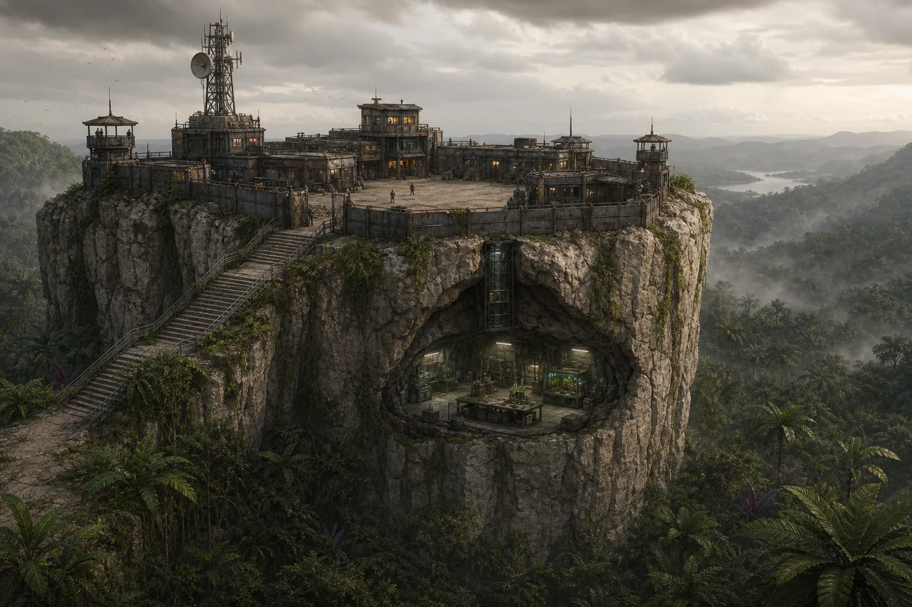
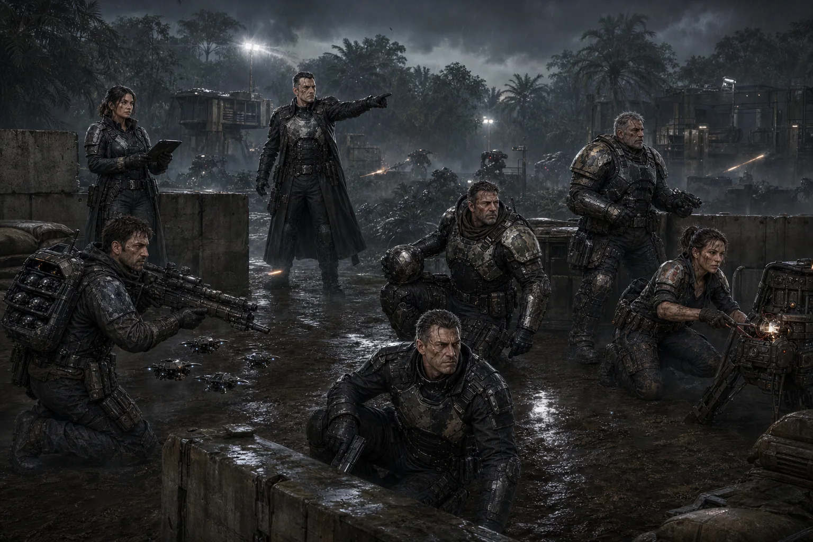

"Fue un jardín una vez. Los Antiguos lo cuidaban. Luego vinieron otros a estudiarlo. Luego vinieron más a saquearlo. Ahora el planeta responde a todos por igual — con muerte."
DLC completo pendiente de playtest, corrección y maquetación.

Monstruoplantas es un mundo planetario situado dentro de la Urdimbre, no una tesela. Fue, según los restos que se conservan, un jardín cultivado por los Antiguos. Desde entonces lo han estudiado, explotado, bombardeado y disputado generaciones de corporaciones, expediciones y ejércitos, sin que ninguna fuerza lo haya controlado por completo.
Aproximadamente el 60% de la superficie es jungla — el entorno dominante del planeta, no un bioma más entre varios. El resto se reparte en regiones excepcionales (glaciares, desierto, pantanos, una gran pared calcárea) y en zonas alteradas directamente por la guerra (las radiactivas liberadas por los bombardeos).
Sobre ese terreno, varias corporaciones sostienen un frente de guerra fronterizo que no deja de moverse. El territorio conquistado avanza y retrocede de una sesión a otra. Una posición segura hoy puede quedar aislada, o detrás de líneas enemigas, en cuestión de días.
Monstruoplantas es enorme. Sobre su superficie conviven, al mismo tiempo, numerosos asentamientos, puestos fronterizos, campamentos, bases corporativas, laboratorios, hospitales de campaña, depósitos, frentes militares, rutas de suministro, posiciones abandonadas y varias guerras y batallas distintas ocurriendo a la vez. El Puesto Fronterizo de los módulos de este DLC es solo uno entre muchísimos: pequeño, pobre, sin control sobre el destino del planeta, y perfectamente capaz de desaparecer sin que la guerra en su conjunto se altere. Importa porque es donde viven y actúan los personajes — no porque sea el centro de nada.
El ecosistema es peligroso para cualquiera que lo pise, sin importar de qué lado del frente esté. La jungla no elige bando: recupera terreno tanto en las zonas que abandona un ejército en retirada como en las posiciones "seguras" que bajan la guardia.
Idea central para dirigir esta ambientación: la frontera humana cambia constantemente, pero la jungla siempre recupera el terreno.
El planeta no debe presentarse como consciente. Algunos de sus habitantes hablan de él como si lo fuera — un rumor recurrente, nunca confirmado — pero lo que hay detrás es adaptación ecológica agresiva, no voluntad (ver "Cómo cambia el frente", más adelante).
Monstruoplantas es un mundo planetario de la Urdimbre, con superficie, atmósfera, clima y geografía propios — no una tesela ni un fragmento del Mosaico. Se llega a él, se vive en él y se sale de él como de cualquier planeta, aunque el mecanismo concreto de acceso siga sin resolverse del todo (ver abajo).
Monstruoplantas tiene varios accesos mediante portal, repartidos por el planeta. No existe un único portal que sea la llave de Monstruoplantas: cada acceso tiene su propio ciclo y sus propias condiciones.
Monstruoplantas tiene varios espaciopuertos. Volar es posible, pero extremadamente difícil, caro y poco fiable: la jungla, la meteorología, la fauna, las interferencias, las zonas de guerra activas, la falta de superficies seguras, los corredores cambiantes, los ataques y el mantenimiento complicado lo convierten en una opción para quien puede permitírsela, no en transporte habitual.
Un espaciopuerto proporciona lo que un aterrizaje improvisado no puede: pistas o zonas de operación despejadas, hangares, defensas, mantenimiento, balizas, comunicaciones, corredores de aproximación, ventanas de vuelo seguras y concentración de suministros. Su importancia es militar, logística y regional — ninguno de ellos controla el planeta entero.
Gestión corporativa:
- Muchos espaciopuertos se mantienen mediante acuerdos temporales entre varias corporaciones a la vez; las alianzas cambian según costes, guerras y necesidades del momento.
- Chafry posee y administra al menos un espaciopuerto propio.
- Workhouse no conquista ni administra espaciopuertos por iniciativa militar propia — la guerra territorial no es su negocio. Cuando participa en una operación, usa la logística y las instalaciones de quien la contrata.
El Puesto Fronterizo no es todo el planeta: es una plaza concreta dentro de un frente enorme y cambiante, uno más entre muchos puntos disputados de Monstruoplantas.
Puesto Fronterizo es un módulo completo ambientado en este mundo.
Para dirigir el tono de la zona, piensa en una región fronteriza durante una guerra prolongada: posiciones que cambian de manos, fortificaciones provisionales, campamentos militares, patrullas, rutas de suministro, hospitales de campaña, evacuaciones, zonas bombardeadas, unidades aisladas que ya no saben si siguen en territorio propio.
La inspiración visual y operativa recuerda a las guerras de jungla del siglo XX, trasladada a la ciencia ficción y fantasía de La Senda: vegetación densa, barro, visibilidad limitada, posiciones fortificadas, vehículos y robots, tropas corporativas, peligro ambiental constante, enemigos a pocos metros sin llegar a verse. No hace falta copiar acontecimientos históricos concretos ni convertir esto en una alegoría política: es una referencia de atmósfera, no de trama.

El portal semanal marca el pulso del Puesto Fronterizo: acumulación de correo y mercancías en los días previos, llegada de relevos, evacuación limitada de heridos, mercado y contrabando alrededor de la apertura, órdenes que llegan tarde, suministros equivocados, gente que espera su turno para marcharse, tensión creciente si el portal no llega a abrirse, y celebraciones, discusiones o peleas que coinciden con el momento de la apertura.
Estos elementos son oportunidades de aventura y de ambiente — no acontecimientos que alteren todo Monstruoplantas cuando ocurren.
Monstruoplantas admite campañas muy distintas entre sí, de escalas muy distintas. No hay una progresión obligatoria de lo cotidiano a lo mítico: una aventura no necesita salvar el planeta para ser importante o memorable.
Cotidianas o personales
- Una pelea por el rancho.
- Un niño perdido.
- Una deuda.
- Un cargamento equivocado.
- Un filtro roto.
- Una criatura dentro del almacén.
- Alguien que quiere marcharse en la próxima apertura del portal.
- Una discusión entre soldados, civiles y trabajadores.
Locales
- Defender el Puesto.
- Investigar una infiltración.
- Buscar una patrulla desaparecida.
- Escoltar suministros.
- Recuperar un campamento.
- Evacuar heridos.
- Sobrevivir hasta que vuelva a abrirse el portal.
Corporativas o militares
- Cumplir una misión asignada por la corporación de los personajes.
- Participar en una batalla.
- Proteger un espaciopuerto.
- Sabotear una posición.
- Negociar una tregua logística entre fuerzas rivales.
- Rescatar una unidad aislada.
- Descubrir por qué un robot sigue defendiendo una frontera abandonada.
Exploración y recompensa
- Capturar una criatura para investigación (ver Recursos y extracción).
- Capturarla para un zoológico, espectáculo o circo.
- Extraer recursos.
- Recuperar tecnología.
- Investigar ruinas (ver Ruinas y lugares de aventura).
- Encontrar una ruta.
- Obtener información.
- Ganar un contacto.
- Recuperar algo sentimental.
- Conseguir comida, descanso, equipo o una oportunidad.
Excepcionales
- Descubrir una especie desconocida.
- Encontrar una ruina ancestral.
- Recuperar un objeto extraordinario.
- Alterar una campaña regional.
- Conocer una pequeña parte de un misterio mayor.
Estos ejemplos se suman a los ganchos ya desarrollados (ver Ganchos) — no los sustituyen.
Aproximadamente el 60% de Monstruoplantas es jungla: es el entorno dominante del planeta, y la mayor parte de lo que ocurre fuera del Puesto Fronterizo ocurre en ella. El resto del planeta se organiza así:
Cada tabla de encuentros cubre exactamente 01-100 sin huecos ni solapamientos, y combina fauna, flora, infectados, peligros ambientales, gente y escenas tranquilas — no todos los resultados exigen combate.
Descripción: Lianas entrelazadas. Movimiento a mitad de velocidad normal por la densidad vegetal. Visibilidad reducida a unos 10 metros.
Tabla de Encuentros (1d100)
| Resultado | Encuentro |
|---|---|
| 01-15 | Lianas activas (1d3 constricción, 8 daño c/u) — obstáculo que forcejear o cortar, no exige combate |
| 16-25 | Grupo de Cazadores Cuádrupedo (1d4) cazando otra presa — puede ignorar al grupo si no interfiere |
| 26-35 | Liana Mayor — territorial, evitable rodeándola si se ve a tiempo |
| 36-45 | Patrulla corporativa perdida, pide indicaciones o agua a cambio de una recompensa pequeña |
| 46-55 | Agua estancada — Resistir Difícil (−10) o infección; purificada, sirve como recurso de agua |
| 56-65 | Rastro reciente de Depredador Gigantoide — señal de territorio a evitar, sin encuentro directo |
| 66-75 | Calma con textura — un claro de luz entre las lianas, restos de un campamento antiguo con algo aprovechable |
| 76-85 | Manada numerosa de Cazadores Cuádrupedo (1d6) — amenaza real de grupo si se les acorrala |
| 86-95 | Indicio de ruina — una piedra tallada asoma entre las raíces, coordenadas incompletas |
| 96-100 | Infectado, Cazador (1d2) — presencia rara del Jardinero tan lejos del frente |
Descripción: Árboles 100+ metros. Raíces forman "cuevas". Luz filtrada.
Escalada: Atletismo Difícil (−10). Combate en las copas: Extremadamente difícil (−20) por la inestabilidad de las ramas — bajar a terreno estable elimina el penalizador.
Tabla de Encuentros (1d100)
| Resultado | Encuentro |
|---|---|
| 01-15 | Árbol Tóxico — amenaza pasiva, evitable sin tocarlo |
| 16-25 | Cazador Cuádrupedo (1d2) en emboscada probable |
| 26-35 | Seta Venenosa (5-20, espora) |
| 36-45 | Raíces enrollan (Fuerza enfrentada a 50) |
| 46-55 | Expedición científica o Pseudo-Arkanita explorando las copas — puede negociar, no busca pelea de entrada |
| 56-65 | Calma con textura — un canto de ave desconocida, marcas de garras enormes en la corteza (rastro sin encuentro) |
| 66-75 | Depredador Gigantoide (raro — amenaza dominante de la zona) |
| 76-85 | Manada de Cazadores Cuádrupedo + Flora hostil combinada |
| 86-95 | Robot centinela colgado entre ramas, sigue vigilando una posición abandonada — no hostil salvo que lo activen |
| 96-100 | Indicio de la Ruina Occidental — símbolo tallado en un tronco, mapa parcial dañado |
Descripción: Acantilados calcáreos. Puesto Fronterizo agarrado aquí. Cavernas con agua dulce (rara).
Tabla de Encuentros (1d100)
| Resultado | Encuentro |
|---|---|
| 01-15 | Cazador Cuádrupedo (1d2) — territorial, no ataca si se evita su zona |
| 16-25 | Lianas Regenerantes densas — obstáculo a atravesar o rodear |
| 26-35 | Patrulla Corp (1d2) — puede ser neutral o aliada, pide documentación o comparte información |
| 36-45 | Grieta con agua dulce — campamento seguro, descanso, posible encuentro con otra patrulla |
| 46-55 | Escena cotidiana — soldados discutiendo por raciones o el turno de guardia |
| 56-65 | Depredador Híbrido |
| 66-75 | Calma con textura — vista panorámica del frente, momento de respiro antes de bajar |
| 76-85 | Zona ocupada por otra corporación — tensión diplomática, no combate automático |
| 86-95 | Resto de guerra — vehículo o arma abandonados, oportunidad de recuperación tecnológica |
| 96-100 | Depredador Gigantoide (raro — amenaza dominante de la zona) |
Descripción: Hielo permanente, grietas profundas, vientos letales. Fauna adaptada al frío extremo.
Temperatura: −40°C (ver Frío Extremo, en Supervivencia).
Tabla de Encuentros (1d100)
| Resultado | Encuentro |
|---|---|
| 01-15 | Bestia Ártica (1d3) — caza, no ataca si no se siente amenazada |
| 16-25 | Grieta y avalancha — Atletismo Difícil (−10) o queda sepultado/separado del grupo y sufre una herida; Atletismo Fácil (+10) para salir por su cuenta, o ayuda de un compañero |
| 26-35 | Infectado, Fase Terminal (1d2) — más lento de lo normal, ralentizado por el frío |
| 36-45 | Radiación Moderada — zona de paso, sin necesidad de combate |
| 46-55 | Patrulla Primus perdida en la ventisca — agradece ayuda o comparte raciones |
| 56-65 | Calma con textura — cielo despejado, una aurora extraña, momento de comida caliente |
| 66-75 | Rastro de Bestia Ártica junto a una presa a medio comer — señal de peligro futuro, evitable |
| 76-85 | Refugio improvisado con restos de una expedición anterior — hallazgo menor, alguna pista |
| 86-95 | Infectado, Vector dirigente solitario |
| 96-100 | Indicio de ruina bajo el hielo — estructura parcialmente visible, coordenadas incompletas |
Descripción: Sin vegetación. Insectos gigantes como depredadores. Día 60°C, noche −20°C.
Temperatura: día 60°C, noche −20°C (ver Calor Extremo, en Supervivencia).
Tabla de Encuentros (1d100)
| Resultado | Encuentro |
|---|---|
| 01-15 | Araña Lobo Gigante — emboscada desde su madriguera, evitable si se detecta antes |
| 16-25 | Enjambre de Escarabajos (10-20) — resolución sencilla, no exige combate turno a turno |
| 26-35 | Infectado, Fase Terminal (1d2) — deambula errático bajo el sol |
| 36-45 | Radiación Alta — zona "muerta", peligro ambiental puro |
| 46-55 | Caravana o patrulla Chafry buscando agua o sombra — escena social, posible intercambio |
| 56-65 | Calma con textura — un espejismo, silencio absoluto, el calor distorsiona el paisaje |
| 66-75 | Resto de un vehículo hundido en la arena — restos aprovechables, oportunidad de recursos |
| 76-85 | Araña Lobo Gigante + Radiación — peligro combinado, más raro |
| 86-95 | Infectado, Cazador (1d2) |
| 96-100 | Indicio de ruina bajo las dunas — metal asomando tras una tormenta reciente |
Descripción: Agua luminiscente de noche. Ácido leve. Fauna acuática. Suelo inestable.
Movimiento en agua: notablemente más lento — cruzar cuesta el doble de tiempo, y no es buen terreno para huir corriendo (exposición acumulada por contacto prolongado — ver Contaminación Biológica, en Supervivencia).
Tabla de Encuentros (1d100)
| Resultado | Encuentro |
|---|---|
| 01-15 | Infección Ambiental — Resistir Difícil (−10) por contacto o herida |
| 16-25 | Depredador Acuático (1d2) — territorial, avisa con señales bajo la superficie antes de atacar |
| 26-35 | Bioluminiscencia extrema — imposible ocultarse, tensión sin combate directo |
| 36-45 | Cieno profundo — Atletismo Difícil (−10) o hundimiento 1d3 asaltos (separación del grupo, urgente si hay depredadores cerca) |
| 46-55 | Pescadores o buscadores locales trabajando la orilla — escena cotidiana, posible favor o información |
| 56-65 | Calma con textura — luces bajo el agua, silencio inquietante, momento de descanso vigilado |
| 66-75 | Rastro de una expedición hundida — restos, pista hacia la Ruina Sumergida |
| 76-85 | Infectado, Fase Terminal buceador |
| 86-95 | Enjambre de Depredadores Acuáticos (1d4) |
| 96-100 | Indicio de la Ruina Sumergida — burbujas de aire artificial, corriente anómala |
Descripción: Bombardeos liberaron radiación masiva. Fauna local muerta/mutada. Infectados del Jardinero patrullan la zona.
Radiación: intensidad alta (ver Radiación, en Supervivencia).
Tabla de Encuentros (1d100)
| Resultado | Encuentro |
|---|---|
| 01-20 | Infectado, Fase Terminal (1d3) — patrulla la zona sin rumbo claro |
| 21-30 | Bestia Irradiada Nivel 1 (1d2) — mutación visible, comportamiento errático pero no aleatorio |
| 31-40 | Infectado, Cazador (1d2) |
| 41-50 | Radiación + Niebla Tóxica — visibilidad 2m, Resistir Difícil (−10) para respirar sin daño |
| 51-60 | Soldados de una corporación rastreando el brote — temen un contagio, piden discreción o ayuda |
| 61-70 | Calma con textura — silencio radiactivo, un cráter reciente, metal fundido en el suelo |
| 71-80 | Bestia Irradiada Nivel 2 (rara — recurso valioso si se estudia) |
| 81-90 | Infectado, Vector dirigente solitario |
| 91-100 | Infectado, Vector dirigente + Escolta (1d2 Cazador) |
El Jardín no es un enemigo con voluntad propia — es un ecosistema que responde a lo que se hace en él. Esto no exige una barra, un contador ni un subsistema: es una herramienta narrativa para que el Narrador improvise consecuencias coherentes.
Algunos habitantes creen que el Jardín "sabe" lo que ocurre, que piensa o que recuerda — un rumor recurrente, sin ninguna prueba que lo sostenga. Para dirigir este DLC, cada respuesta del entorno se explica por adaptación, selección y recolonización ecológica, no por voluntad ni memoria. Eso no impide que los propios personajes o los PNJ interpreten lo sucedido de forma supersticiosa: la explicación ecológica es la que usa el Narrador para decidir qué pasa, no necesariamente la que dan los habitantes del mundo.
Cómo cambia el frente
| Si los personajes... | El Jardín responde... |
|---|---|
| Talan vegetación o usan fuego a gran escala | Especies oportunistas (lianas, esporas) colonizan el claro en semanas |
| Eliminan un depredador dominante de una zona | Sus presas se multiplican sin control, y otro depredador ocupa el hueco |
| Repiten la misma ruta o el mismo horario | Las criaturas locales aprenden el patrón y preparan emboscadas |
| Usan la misma arma o táctica de forma reiterada | Los organismos más resistentes a ese método sobreviven y se reproducen |
| Abandonan una posición tras un bombardeo | La vegetación recupera el terreno más rápido de lo esperado |
| Dejan cadáveres, metal o sustancias tras un combate | El área se convierte en nicho para nuevas formas de vida — incluidos infectados (ver Fauna, flora e infectados) |
Cualquier corporación puede tener intereses en Monstruoplantas: tropas propias, contratistas, investigadores, suministros o agentes encubiertos. La presencia cambia según el sector del frente y el momento de la campaña — algunas corporaciones combaten directamente, otras financian expediciones sin ensuciarse las manos, otras compran criaturas, recursos, información o tecnología a quien se las lleve. Pueden existir alianzas temporales entre corporaciones rivales, y dos corporaciones aliadas aquí pueden enfrentarse en otro punto de la Urdimbre. Además del personal corporativo, en el planeta operan ejércitos regulares, robots de combate, mercenarios y fuerzas independientes.
Los PNJ siguientes son ejemplos útiles para dirigir, no la totalidad de las fuerzas presentes en el planeta.
Por qué alguien trabajaría para cada corporación (o con ella):
- TecnoStealer: improvisación tecnológica y recuperación de material que nadie más consigue salvar, capacidad real de mantener sistemas con piezas incompatibles — a cambio de pagos tardíos y cuotas que no perdonan un mal ciclo.
- Chafry: ciencia real, biotecnología, instalaciones propias, un espaciopuerto propio e investigación seria sobre organismos extremos — a cambio de una ética de investigación que no siempre resiste una mirada de cerca.
- Serpent: información, contactos, discreción y capacidad para conseguir lo que los canales oficiales no dan — a cambio de tratar con gente que vende lo que sabe al mejor postor, incluido lo que sabe de ti.
- Primus: disciplina, logística, protocolo, protección real y capacidad militar seria — a cambio de rigidez y poca tolerancia al riesgo o a la improvisación.
- Workhouse: disponibilidad inmediata de trabajadores y especialistas, adaptación rápida a cualquier contrato — a cambio de condiciones duras y desiguales para quien trabaja bajo su contrato.
Comandante Varice (TecnoStealer)
Función: manda la guarnición TecnoStealer del Puesto y gestiona sus cuotas de extracción.
Primera impresión: cínico, cicatrices de radiación, exige resultados sin rodeos.
Quiere: cubrir la cuota de artefactos Arcanita y muestras del ciclo.
Ofrece: contratos rápidos y acceso a la logística TecnoStealer (talleres, recuperación tecnológica, piezas que no se consiguen en otro sitio).
Respeta: a quien cumple lo pactado sin quejarse.
Le molesta: excusas, retrasos, renegociar el precio después de cerrado el trato.
Problema actual: la cuota de este ciclo no se cubre, y necesita resultados rápidos aunque sean chapuceros.
Secreto: negocia información de exploración con las Pseudo-Arkanitas a espaldas de TecnoStealer — solo importa si el grupo lo descubre y decide qué hacer con ello.
Contacto: oficina subterránea, código corp.
Dra. Sonya Kess (Chafry)
Función: dirige el laboratorio de Chafry bajo el Puesto y estudia las mutaciones biológicas del planeta.
Primera impresión: joven, ambiciosa, casi no duerme, habla de datos antes que de personas.
Quiere: especímenes y tejido de criaturas mutadas para publicar y ascender.
Ofrece: acceso a instalaciones científicas reales — analizar muestras, identificar mutaciones, tratar exposiciones raras — que nadie más en la zona tiene.
Respeta: resultados verificables y especímenes bien conservados.
Le molesta: que le cuestionen la ética de sus métodos.
Problema actual: sus experimentos con Vectores dirigentes capturados para aislar al Jardinero han fallado, y necesita justificar el gasto.
Secreto: sabe que sus experimentos son moralmente turbios y los sigue haciendo igual — no es incompetente, es alguien brillante que ha decidido que el resultado lo justifica.
Contacto: laboratorio en caverna bajo el Puesto. Contraseña: "Mutación-Alpha".
Kemar Vall (Serpent)
Función: intermediario de información y mercado negro de la zona.
Primera impresión: voz suave, mide cada palabra, nunca parece sorprendido.
Quiere: información revendible y mantener su red de contactos intacta.
Ofrece: acceso a lo que los canales oficiales no dan — datos clasificados, contactos discretos, una salida cuando nadie más la tiene.
Respeta: la discreción y la puntualidad en los pagos.
Le molesta: que alguien hable de sus tratos en público.
Problema actual: su informante dentro de Chafry (la propia Dra. Kess) es un activo valioso y peligroso de mantener en secreto.
Secreto: vende información de Kess a las Pseudo-Arkanitas — jugable si el grupo lo descubre y decide usarlo como palanca o advertir a alguien.
Contacto: cantina del Puesto, trastienda. "Pregunta por K".
Maestro de Portal Talwen (Conclave de Maestros de Portales)
Función: custodia el portal semanal junto al Puesto.
Primera impresión: anciano que apenas habla; su quietud resulta inquietante más que su silencio.
Quiere: mantener el equilibrio planar y las normas del Conclave — nada más.
Ofrece: paso por el portal, si lo permite, y advertencias crípticas sobre lo que ha visto cruzar.
Respeta: a quien no intenta forzarlo ni sobornarlo.
Le molesta: la prisa y las exigencias.
Secreto: sostiene que el portal es obra de los Antiguos y que él es su custodio heredado, posiblemente inmortal y no humano — nadie ha podido confirmarlo (ver Acceso al mundo).
Contacto: ante el portal, presencia inmóvil siempre.
Pseudo-Arkanitas "La Búsqueda Restaurada"
Objetivo: recuperar tecnología y conocimiento Arcanita — lo consideran una herencia propia, no un botín cualquiera.
Tácticas: rápidas y decididas cuando creen que algo les pertenece por derecho; fuera de eso, pueden negociar, competir, mentir, retirarse, contratar ayuda o colaborar temporalmente si conviene a ambas partes.
Equipamiento: armas avanzadas, armaduras de nivel 3-4, artefactos Arcanita menores en ocasiones.
Capitán Ash (Pseudo-Arkanitas)
Función: lidera la célula que opera cerca del Puesto Fronterizo.
Primera impresión: cicatriz marcada, prótesis de pierna mal ajustada, obsesiva con su misión.
Quiere: recuperar tecnología y conocimiento Arcanita.
Ofrece: información sobre ruinas a cambio de ayuda o artefactos menores; colaboración temporal si los intereses coinciden.
Respeta: a quien demuestra conocer o respetar el legado Arcanita.
Le molesta: que traten los restos Arcanita como simple mercancía.
Problema actual: compite con otras células y con TecnoStealer por el mismo hallazgo.
Contacto: variable, a través de sus patrullas o de quien le pague información.
Patrol Militar Primus
Objetivo: vigilar anomalías y radiación, clasificar amenazas.
Tácticas: formales, protocolarias, evitan riesgo innecesario.
Equipamiento: Blindaje pesado (Nivel 4), armas estándar, médico básico, detectores.
Teniente Harkon (Primus)
Función: comanda la patrulla Primus de la zona.
Primera impresión: disciplinado, protocolario, sin corrupción visible.
Quiere: cumplir el protocolo y evitar riesgos innecesarios para su gente.
Ofrece: protección, información clasificada a cambio de hallazgos reportados, respeto profesional a quien trabaje limpio.
Respeta: a los mercenarios que cumplen su palabra y no improvisan con la seguridad de otros.
Le molesta: el contrabando y la venta ilegal de material peligroso.
Problema actual: una patrulla suya lleva días desaparecida en los Pantanos (ver Gancho 4).
Contacto: puesto de mando Primus, cerca del Puesto Fronterizo.
Workhouse — Contingente Contratado
Objetivo: cumplir el contrato vigente de quien los haya contratado — reforzar una posición, construir defensas, sustituir bajas, recuperar material, limpiar una zona, trabajar en un espaciopuerto o participar en la operación de otra corporación. No libran guerras territoriales por iniciativa propia, no conquistan portales ni espaciopuertos, y no mantienen un frente independiente: eso no es su negocio.
Tácticas: disciplina de trabajo, no de combate — siguen las órdenes de quien los contrató; en combate, cohesión de grupo y equipo básico, sin iniciativa táctica propia.
Equipamiento: Blindaje Nivel 1, armas estándar; varía según lo que pague el contratante.
Relación con los personajes: depende por completo de quién los contrató y del contrato vigente en ese momento — pueden ser aliados, competencia por el mismo trabajo, o indiferentes si no comparten zona.
Capataz Grim (Workhouse)
Función: responsable del contingente Workhouse en el Puesto Fronterizo.
Primera impresión: corpulento, implantes metálicos visibles en el rostro, va directo al grano.
Quiere: cumplir los contratos de su gente y quedar bien ante Workhouse.
Ofrece: trabajo temporal, mano de obra prestada si el contratante lo autoriza, información sobre lo que se cuece en otros contratos de la zona.
Respeta: a quien negocia claro y paga lo acordado.
Le molesta: que le hagan perder tiempo o gente sin necesidad.
Problema actual: el contingente ha sufrido bajas recientes y necesita reemplazos o ayuda antes del próximo informe a Workhouse.
Contacto: campamento Workhouse junto al Puesto.
Cada criatura de este apartado incluye, en dos o tres frases, lo necesario para dirigirla sin inventar sobre la marcha: señales de presencia, comportamiento y objetivo habitual, qué la vuelve hostil, cuándo se retira, cómo evitarla o distraerla, y qué recursos o consecuencias puede dejar. Son animales, organismos o colonias biológicas — no enemigos tácticos que luchan siempre hasta morir. Un encuentro con fauna puede resolverse por evasión, retirada, ofrecerle comida, distracción, conocimiento del territorio, protección adecuada, captura o simplemente esperando a que pierda interés, no solo a golpes.
Liana Estándar
F65/A10/P5 | PV 30 | Blindaje 3 (Corteza) | Constricción 60% | Daño 8 (asfixia) |
Cómo actúa: detecta vibración y calor a corta distancia, no por vista. Intenta sujetar a quien entra en su alcance (unos 3 m) o se queda quieto cerca. Si la Constricción tiene éxito, atrapa al objetivo: 8 de daño (asfixia) al empezar cada uno de los turnos de la liana mientras siga sujeto.
Escapar: el atrapado puede forcejear (Proezas, Fuerza enfrentada a la liana) o cortar el segmento que lo sujeta (Arma CC Media o Sin Armas contra su Blindaje 3). Un compañero puede atacar el mismo segmento en vez de forcejear. La liana deja de constreñir si el segmento es destruido o el forcejeo tiene éxito.
Regeneración: recupera un segmento cortado en 3 asaltos si la planta conserva alguna raíz intacta; un segmento reducido a 0 PV no vuelve a la acción de inmediato. El fuego y los productos químicos fuertes destruyen un segmento sin darle ocasión de regenerar.
Ataca en grupo si hay varios segmentos cerca (ver Ataque en grupo, Mecánicas del Sistema).
Liana Mayor
F75/A5/P8 | PV 45 | Blindaje 4 | Constricción 70%, Veneno 40% | Daño 12 + Veneno 2 |
Mismo procedimiento que la Liana Estándar (detección, alcance, forcejeo, corte del segmento, ataque en grupo), con estas diferencias:
- Regenera en 2 asaltos en vez de 3.
- Mientras sujeta a la víctima, esta debe superar Resistir Difícil (−10) cada asalto o sufre los 2 puntos de daño de Veneno además del de Constricción.
- Ácido leve: mientras dura la constricción sostenida, el Blindaje de la víctima se reduce en 1 cada 2 asaltos, hasta limpiar o reparar la protección.
Cazador Cuádrupedo — Estándar
F50/A60/P45 | PV 25/25/25 | Blindaje 2 (Piel) | Melé 75% (Colmillos) | Daño 9, Pen 1 |
Aprendizaje: tras ser atacado por primera vez por un adversario concreto, obtiene +5 en sus acciones contra ese adversario el resto del encuentro. Si vuelve a percibir el mismo patrón una segunda vez, sube a +10 contra él — máximo +10 por adversario. Se pierde al terminar el encuentro.
Manada: caza y se mueve en grupo; usa Ataque en grupo (Mecánicas del Sistema) cuando actúan varios juntos, sin daño automático añadido.
Comportamiento: señales de presencia — huellas frescas, olor almizclado, chillidos lejanos coordinando la manada. Ataca presas aisladas o heridas; evita presas claramente más fuertes salvo en manada numerosa. Se retira si pierde a la mitad de la manada o si la presa resulta mucho más peligrosa de lo esperado. Puede distraerse con comida y capturarse vivo con sedantes o una jaula preparada (ver Recursos y extracción).
Depredador Híbrido — Cabezas Múltiples
F60/A45/P50 | PV 30/30/30 | Blindaje 3 | Melé 70% | Daño 10 |
Dos cabezas, una actuación: por defecto ataca una sola vez por turno con Melé 70% (Daño 10) — tener dos cabezas no da un segundo ataque gratuito. Si quiere repartir su ataque entre dos objetivos próximos en el mismo turno, usa División de habilidad (Mecánicas del Sistema): reparte el 70% en dos tiradas de mínimo 25 puntos cada una, una por cabeza, cada una contra un objetivo distinto.
Vigilancia: mientras una cabeza ataca, la otra vigila — no sufre el bono habitual por ataque desde flanco o espalda en combate normal, aunque sigue siendo vulnerable a una emboscada bien planeada o a sigilo excepcional.
Regeneración (2 PV por asalto): se aplica al empezar cada uno de sus turnos mientras siga con vida; se detiene al morir. No requiere estar fuera de combate.
Comportamiento: caza en solitario o en pareja; señal de presencia — dos pares de ojos brillando de noche, pisadas asimétricas. Ataca con ventaja clara de posición o número; se retira si pierde una cabeza o la presa resulta más peligrosa de lo esperado.
Depredador Gigantoide — Ápice
F80/A50/P60 | PV 60/60/60 | Blindaje 4 | Melé 80% | Daño 16, Pen 2 |
Dominio territorial: dentro de su propio territorio, +5 a sus tiradas de ataque y percepción.
Carga: se mueve el doble de su movimiento normal para cerrar distancia y ataca ese mismo turno con una tirada de Melé normal — no hay impacto automático por cargar. Si cierra la distancia completa en el asalto en que empieza a moverse, obtiene Posición ventajosa (+10, Mecánicas del Sistema) a esa tirada de ataque.
Vulnerabilidad: el lomo tiene Blindaje 2 en vez de 4 — solo accesible si algo lo distrae o lo rodea.
Territorio: raramente aparece en encuentros aleatorios — es la amenaza dominante de su región, y deja señales previas reconocibles: árboles arañados en altura, huesos y restos apilados, silencio repentino de otros depredadores menores. Un grupo que las reconozca puede evitarlo, retirarse, distraerlo, abandonar su territorio o usar el terreno (grietas, desniveles) a su favor en vez de enfrentarlo.
Seta Venenosa Rastrera
F10/A5/P3 | PV 8 | Blindaje 0 | No ataca | Veneno 60% (contacto) |
Vías de exposición: contacto directo con la seta, o inhalación de sus esporas si se libera la nube. No hay riesgo por mera proximidad si no se pisa ni se altera.
Espora: si se aplasta, se quema o se perturba físicamente, libera una nube de 2 m de radio — quien la respire debe superar Resistir Normal (0) o sufre −10 a Alerta cuando dependa de la visión y se desplaza a la mitad de su velocidad normal durante 1d6 asaltos. El fuego fuerza la liberación inmediata: quemar un grupo de setas sin retirarse antes puede dejar a quien lo hace dentro de la propia nube.
Crece en grupos de 5-20. No huye ni ataca — el peligro es pisarla, quemarla cerca de gente o recolectarla sin protección.
Árbol Tóxico — Corteza Ácida
F70/A15/P25 | PV 80 | Blindaje 4 (Corteza) | Secreción Ácida (contacto directo) | Daño 3 (por asalto contacto) |
No se mueve ni ataca por iniciativa propia — toda su amenaza es pasiva o reactiva, no un ataque automático por estar cerca.
Secreción pasiva: quien permanece en contacto sostenido con la corteza sufre 3 de daño por asalto mientras dure el contacto — se evita no tocándolo.
Salpicadura (reacción): un ataque cuerpo a cuerpo con éxito contra el árbol libera ácido de vuelta — Resistir Fácil (+10) o 2 de daño.
Raíces: si alguien permanece varios asaltos junto al tronco o lo ataca desde muy cerca, las raíces pueden intentar enrollarlo — mismo procedimiento de sujeción y escape que las Lianas Regenerantes (Fuerza enfrentada a 50).
Estas criaturas viven repartidas por distintos biomas del planeta y aparecen en sus tablas de encuentros.
Bestia Ártica — Glaciares
F55/A50/P50 | PV 30/30/30 | Blindaje 3 (grasa y pelaje denso) | Melé 65% (garras y mordisco) | Daño 10, Pen 1 | Esquiva 35% |
Adaptación: inmune a la Exposición por Frío Extremo (ver Supervivencia) mientras esté en su hábitat; sin ninguna otra inmunidad ni capacidad de Distorsión.
Comportamiento: caza en manada de 2-4, o en solitario los ejemplares viejos; localiza presas por olfato y por las vibraciones que dejan sobre el hielo, no por vista a distancia. Señales de presencia: huellas grandes y profundas, marcas de garra en el hielo, montículos de nieve removida junto a una madriguera.
Ataca si defiende una madriguera o cría, o ante una presa aislada que parezca fácil; se retira si pierde a un miembro de la manada o el grupo resulta mucho más peligroso de lo esperado. Conoce las grietas de su territorio y puede usarlas para emboscar o escapar, pero una ventisca le reduce la percepción igual que a cualquiera — no ve ni oye mejor que el grupo en esas condiciones.
Evitarla/distraerla: alejarse de una madriguera señalada o dejarle comida.
Recurso: piel y grasa aislantes, o captura viva de interés para Dra. Kess.
Araña Lobo Gigante — Desierto
F45/A65/P55 | PV 20/20/20 | Blindaje 2 (exoesqueleto) | Melé 65% (mordisco, Pen 1), Distancia 50% (hilo pegajoso — inmoviliza, sin daño) | Daño 8 | Esquiva 55% |
Comportamiento: vive en una madriguera oculta bajo la arena; detecta presas por las vibraciones de sus pasos, no por vista. De día permanece oculta salvo que la molesten; caza sobre todo de noche.
Ataca desde la emboscada, con sorpresa si nadie la detecta antes (Alerta o Vigilar/Rastrear para notar el montículo de arena removida); si falla la emboscada o el objetivo es demasiado fuerte, se retira a la madriguera en vez de sostener el combate.
Veneno: solo si muerde con éxito y decide inyectarlo, nunca automático — Resistir Difícil (−10) o −5 a todas las habilidades durante 1d6 asaltos.
Evitarla/distraerla: moverse despacio reduce las vibraciones que la alertan; el hilo pegajoso puede cortarse o quemarse para liberar a un inmovilizado.
Recurso: veneno extraíble (mismo procedimiento que la Espora de Seta Venenosa) o seda resistente, de interés para Chafry.
Enjambre de Escarabajos — Desierto
F20/A40/P30 | PV 6 por unidad (grupos de 5 — ver Ataque en grupo, Mecánicas del Sistema) | Blindaje 1 | Melé 45% | Daño 3 | Esquiva 50% |
Qué lo atrae: calor corporal, sangre, comida expuesta, luz. Qué consume: materia orgánica, cuero, textiles y raciones sin proteger — puede arruinar suministros en minutos si nadie reacciona.
Cómo se dispersa: fuego, humo denso o un ruido fuerte y súbito lo espantan de inmediato; no persigue más allá de lo que lo atrajo.
Protección: ropa cerrada o Blindaje 2+ reduce el daño a la mitad; cerrar la fuente de luz o comida corta su interés sin necesidad de combatirlo.
Resolución sencilla: no hace falta resolverlo turno a turno — basta una tirada de Atletismo o Resistir para atravesarlo, o una acción concreta (cerrar la caja, apagar la luz, prender humo) para dispersarlo.
Bestia Irradiada — Nivel 1 — Zonas Radiactivas Liberadas
F55/A40/P35 | PV 30/30/30 | Blindaje 3 (piel curtida) | Melé 65% | Daño 9, Pen 1 | Esquiva 35% |
Qué era: fauna local corriente (probablemente emparentada con el Cazador Cuádrupedo) expuesta a radiación durante generaciones — no es un efecto de Deriva, es puramente radiológico. Efectos visibles: protuberancias óseas, pelaje quemado en parches, alguna extremidad de más o deforme, respiración pesada.
Comportamiento: errático pero no aleatorio — más agresiva con hambre o acorralada; evita la luz directa y prefiere sombra o ruinas.
Peligro añadido: emite radiación de bajo nivel por contacto prolongado — usa las reglas de Radiación de Supervivencia si alguien la toca o permanece muy cerca varios asaltos.
Se retira si queda gravemente herida y tiene vía de escape.
Recurso: tejido mutado analizable por un laboratorio.
Bestia Irradiada — Nivel 2 — Zonas Radiactivas Liberadas (más rara)
F70/A45/P40 | PV 45/45/45 | Blindaje 4 (piel curtida, más gruesa) | Melé 78% | Daño 13, Pen 2 | Esquiva 40% |
Variante más rara y peligrosa de la Nivel 1, con mutaciones más marcadas y más años de exposición. Mismo comportamiento y mismas reglas de radiación por contacto, con más daño y resistencia.
Por qué capturarla o estudiarla: su tejido mutado, más desarrollado, es justo lo que busca la Dra. Kess (ver Gancho 3) — vale mucho más que un ejemplar Nivel 1 precisamente por lo raro de sobrevivir tanto tiempo expuesto.
Depredador Acuático — Pantanos de Bioluminiscencia
F60/A50/P45 | PV 35/35/35 | Blindaje 3 (piel correosa) | Melé 72% (mordisco) | Daño 11, Pen 1 | Esquiva 30% en tierra, 50% en agua |
Comportamiento: territorial, caza desde el agua turbia o entre la bioluminiscencia. Señales antes de atacar: ondas sin viento, luces perturbadas bajo la superficie, burbujas que se acercan.
Ataca desde el agua contra quien se acerca a su territorio de caza o vadea distraído; se retira si el combate se prolonga fuera de su ventaja (sacado a tierra, o si pierde más de la mitad de sus PV).
Combatir en el agua lo favorece: además de la lentitud que ya afecta a cualquiera que se mueva por el agua de los Pantanos (ver Geografía y regiones), conoce su territorio y ataca con ventaja a quien esté dentro del agua.
Evitarlo: conocer su territorio (Supervivencia o guía local) permite rodearlo; dejarle comida o alejarse de las señales bajo la superficie evita el enfrentamiento.
Recurso: piel correosa, valorada como material impermeable.
Infección Ambiental — Agua Pantanosa
Contacto sostenido (3+ asaltos) o herida abierta expuesta: Resistir Difícil (−10) o infección leve (−5 a todas las habilidades, 1d6 horas). Una pifia agrava la infección a grave (−10 a todas las habilidades, 24h). Se trata con Medicina −10 (enfermedad no trivial), sin penalizador con instalaciones médicas adecuadas.
Degradación Material — Suelo Activo
Blindaje 1-2: −1 efectividad cada 4 asaltos. Blindaje 3+: resiste indefinidamente. Equipamiento: revisión cada 8 horas.
Los llamados "zombis" de Monstruoplantas no son víctimas de tecnología corporativa: son huéspedes controlados por un parásito propio del Jardín. Soldados y habitantes del planeta lo llaman el Jardinero, y a los infectados, jardineros cuando el contexto lo deja claro. Puede existir un nombre técnico corporativo más largo, pero no hace falta inventarlo para dirigir esta ambientación.
El Jardinero invade el sistema nervioso de animales o personas y se sirve de su movilidad, sus reflejos, sus hábitos, su entrenamiento y su conocimiento residual para moverse, atacar y propagarse. Los soldados son huéspedes frecuentes porque la guerra le proporciona cadáveres, heridos y campamentos enteros — pero el parásito no distingue entre personal corporativo, civiles o fauna local. No está claro, y este DLC no lo resuelve, cuánto queda de la conciencia original del huésped una vez infectado.
Fase Terminal (Lento, resistente, casi no siente daño)
F60/A30/P15 | PV 35/35/35 | Blindaje 4 (Piel quemada) | Melé 55% | Daño 7 |
Regeneración: 1 PV por 2 asaltos, solo fuera de combate (si no ha recibido daño en su último turno). Se detiene al morir — la colonia puede sacrificar el cuerpo, pero no es inmortal: agotar su Tullido lo detiene para siempre.
Movimiento: −10 a Iniciativa — el cuerpo está deteriorado y se mueve con torpeza.
Resistencia: inmunidad parcial a venenos (+10 a Resistir frente a venenos).
Sigue actuando incluso gravemente herido: el Jardinero no siente dolor como el huésped original — no se retira ni se detiene por las heridas. Sigue atacando con normalidad en Sano y Herido, y sigue atacando en Tullido con su penalizador de −20, hasta morir.
Comportamiento: señal de presencia — arrastra los pies, respiración irregular o ausente, olor a descomposición. Ataca a cualquier ser vivo cercano sin distinguir amenaza real de inofensiva; no se retira ni negocia. Puede evitarse por sigilo o alejándose sin hacer ruido — reacciona al movimiento y al sonido, no parece ver bien.
Cazador (Ágil, coordinación básica, tácticas simples)
F55/A55/P40 | PV 28/28/28 | Blindaje 2 (Musculatura) | Melé 70%, Distancia 40% | Daño 6 melé, 4 distancia |
Coordinación: cuando varios Cazadores actúan juntos, usa Ataque en grupo (Mecánicas del Sistema) en vez de un bono aparte — no acumules los dos.
Tácticas: rodea, flanquea, se oculta y espera el momento — el sistema nervioso del huésped conserva sus hábitos y su entrenamiento, y puede usar herramientas o armas sencillas que el huésped ya supiera manejar, incluido equipo corporativo abandonado.
Comportamiento: señal de presencia — movimiento organizado y silencioso, más discreto que la Fase Terminal. Ataca con ventaja de número o sorpresa; si el ataque falla y queda solo, puede retirarse a esperar refuerzos en vez de insistir. Evitarlo pasa por no repetir rutas u horarios (ver Cómo cambia el frente) y por distraerlo con ruido o presas más fáciles.
Vector dirigente (Memoria funcional, coordina infectados, puede parecer inteligente)
F50/A65/P60 | PV 24/24/24 | Blindaje 3 (Traje corp reforzado) | Melé 85%, Distancia 75% | Daño 8 melé, 6 distancia, Pen 1 |
Coordinación: da órdenes concretas a los infectados que la oyen o ven — elige objetivos, organiza emboscadas y puede ordenar una retirada organizada en vez de una desbandada, algo que Fase Terminal y Cazador no hacen por sí solos. No concede un bono numérico permanente a los demás infectados: su aporte es táctico, no un modificador fijo de combate.
Memoria residual: puede repetir palabras, códigos o procedimientos que recuerda del huésped — usar un arma o comunicador que este conociera, dar una contraseña, seguir a medias un protocolo militar. No queda claro si es la persona quien habla o la colonia que la controla.
Captura: se puede capturar viva reduciéndola a Inconsciente en vez de Muerta (heridas no letales, sedantes, redes) — matarla destruye la información que porta. Indicios de memoria residual: repite una frase o código una y otra vez, reacciona a un nombre o rango militar, o se detiene un instante ante una orden familiar antes de continuar atacando.
Información capturable: ver Infección y guerra: consecuencias, a continuación.
La información que porta un infectado no se recupera extrayendo un chip: puede obtenerse mediante observación, captura, medicina, biología, interrogación o Distorsión apropiada, y mediante el análisis del cerebro o de la colonia del Jardinero. No existe un procedimiento fijo para hacerlo — el Narrador decide qué se puede rescatar en cada caso concreto.
En Monstruoplantas, Supervivencia y Resistir cubren fases distintas del mismo peligro. Supervivencia sirve para anticiparse: detectar el peligro, preparar la ruta, encontrar refugio, racionar agua, proteger el equipo, calcular tiempos y elegir cómo atravesar una región — una buena tirada puede evitar una tirada posterior de Resistir, mejorar la Habilidad efectiva con la que se resiste, ampliar el intervalo entre tiradas, reducir la Exposición acumulada o permitir elegir una ruta menos peligrosa. Resistir se usa cuando el personaje ya está sometido al peligro — frío, calor, fatiga, contaminación, infección, radiación, privación — con los modificadores de dificultad de este capítulo. Ninguna preparación con Supervivencia concede inmunidad automática, y Resistir no sustituye a no haberse preparado.
Medicina, en este capítulo: un tratamiento común no lleva modificador; una enfermedad o tratamiento difícil aplica −10; una condición extrema o la ausencia grave de medios aplica −20; el equipo, la medicación o unas instalaciones adecuadas pueden conceder +10, +20, o eliminar el penalizador según el caso. Son modificadores a la Habilidad efectiva de Medicina, no requisitos mínimos de habilidad.
Cada peligro acumulativo lleva su propio contador de Exposición, de 0 a 5. Solo se registra mientras exista una exposición real: salir del peligro detiene la acumulación, y no se piden tiradas repetidas cuando la escena ya está resuelta o el personaje cuenta con protección suficiente.
Inmediatos (daño o consecuencia directa, sin pasar por Exposición): ácido, incendio, caídas, contacto con sustancias extremas, ciertas zonas de radiación.
Acumulativos (suman Exposición): frío, calor, agotamiento, contaminación, infección.
Mixtos: pueden causar daño y sumar Exposición a la vez cuando la intensidad lo justifique — la Radiación de Monstruoplantas hace ambas cosas (ver abajo).
Radiación (Zonas Radiactivas Liberadas)
Monstruoplantas distingue tres intensidades, ya presentes en este documento: moderada (Glaciares, tras un bombardeo lejano — 1 daño/2 asaltos), alta (Zonas Radiactivas Liberadas y Desierto tras liberación — 2 daño/asalto sin protección) y epicentros letales (el centro de un bombardeo reciente o una instalación arrasada — el Narrador puede superar las cifras de la zona alta sin protección adecuada).
- Base en zona alta: 2 daño/asalto sin protección. El Blindaje reduce como máximo 1 punto de ese daño.
- Cada 6 asaltos de exposición continuada: Resistir Extremadamente difícil (−20) o +1 Exposición.
- Al alcanzar 5: Enfermedad de Radiación (−5 a todas las habilidades, 1d6 días). Se cura con Medicina −10, sin penalizador con instalaciones médicas adecuadas, o con equipo especializado (1000 PC).
- La protección adecuada importa más que el Blindaje bruto: puede evitar el daño, reducir el penalizador, ampliar el intervalo entre tiradas, impedir la Exposición durante un tiempo, o permitir cruzar una zona de otro modo intransitable. El Blindaje convencional no protege contra radiación salvo que el equipo lo indique expresamente.
Frío Extremo (Glaciares, noches del Desierto)
- Base: −40°C (Glaciares) o −20°C (noche en el Desierto).
- Resistir Extremadamente difícil (−20) cada hora en Glaciares, o cada 2 horas de noche en el Desierto.
- Fallo: 1 daño por frío (ignora el 50% del Blindaje) + 1 Exposición.
- Al alcanzar 5: Hipotermia — el personaje queda Inconsciente y necesita refugio, calor o ayuda de otra persona. Mientras siga expuesto sin ayuda, continúa recibiendo el daño por frío de este apartado a los mismos intervalos; no muere automáticamente al llegar a 5, pero puede morir por acumulación de daño si nadie interviene. Medicina, Supervivencia y el equipo adecuado (fuego, refugio, mantas) pueden estabilizarlo y ayudar a recuperarlo, con los modificadores de Medicina de este capítulo según los medios disponibles.
- Supervivencia (fuego, refugio, ropa adecuada, calcular cuándo moverse) puede evitar la tirada, ampliar el intervalo o reducir la Exposición acumulada.
- Prevención: traje aislante, fuego, bebidas calientes.
Calor Extremo (Desierto, de día)
- Base: +60°C.
- Resistir Normal (0) cada 2 horas sin agua.
- Fallo: 1 daño por calor + 1 Exposición. Beber 1L de agua reduce la Exposición acumulada en 1 punto.
- Al alcanzar 5: Deshidratación Crítica (−10 a todas las habilidades, inconsciente 1d6h después).
- Supervivencia (sombra, ropa clara, raciones de agua, elegir cuándo moverse) puede evitar la tirada o ampliar el intervalo.
- Prevención: sombra, ropa clara, hidratación.
Contaminación Biológica (Agua Pantanosa, Suelo Activo)
- Puede exigir tirada: contacto 3+ asaltos o herida abierta. No conviertas un contacto menor en tirada.
- Resistir Difícil (−10) o +1 Exposición.
- Al alcanzar 5: Infección (−5 a todas las habilidades). Se cura con Medicina −10 y 3 días de reposo, sin penalizador con instalaciones médicas adecuadas.
- Supervivencia (heridas cubiertas, aislamiento químico, rutas que evitan el contacto) puede prevenirla antes de que exija tirada.
- Prevención: heridas cubiertas, aislamiento químico, antídotos.
Deriva puntual (Contaminación Planar — Rara)
La Deriva no es el peligro central de Monstruoplantas: aparece solo en zonas concretas — ruinas Arcanita, epicentros radiactivos especialmente inestables, alguna tormenta fuera de lo común — y debe tratarse como un peligro secundario, no como un sistema paralelo. No usa la escala de Exposición 0-5 de este capítulo.
- La exposición a una anomalía de este tipo concede una cantidad de Deriva variable, decidida por el Narrador según la escena, igual que cualquier otra exposición a una anomalía de distorsión. No existe una tirada genérica de resistencia para evitarla. En Monstruoplantas, las zonas inestables deberían conceder normalmente pocos puntos, salvo que una anomalía excepcional y expresamente descrita indique lo contrario.
- Se rige por las reglas generales de Mecánicas del Sistema: la Tabla A se activa al alcanzar o superar por primera vez cada múltiplo de 10, atravesar varios umbrales de golpe activa cada uno, y reducir la Deriva acumulada no borra las consecuencias ya obtenidas.
- Las reducciones raciales que se aplican a los cruces de portal no se aplican automáticamente a esta exposición ambiental; el Narrador decide si corresponden. Las inmunidades expresas, como la del Droideum, se respetan siempre.
- Si una mención de Deriva en una escena concreta no aporta nada al lugar, puede eliminarse. Si se conserva, debe quedar puntual y concreta — no generalizada a todo un bioma.
- Prevención: evitar la zona señalada. Si una escena concreta exige protección ante una anomalía específica, esa protección debe ser una solución propia de esa anomalía (un dispositivo, un ritual, un conocimiento concreto) — no existe un equipo genérico que proteja de la Deriva en general.
| Equipo | Precio | Efecto | Duración/Usos |
|---|---|---|---|
| Traje Aislante Térmico | 400 | −1 daño por frío o calor | 10 usos |
| Máscara Filtro Biológico | 200 | +10 a Resistir contra contaminación biológica inhalada. No protege heridas abiertas, ingestión, contacto cutáneo ni otras vías no cubiertas | 5 filtros; cada uno dura 8 horas de uso continuo o una escena de contaminación especialmente intensa, luego se sustituye |
| Detector Radiación | 300 | Avisa de radiación en un radio de 10m — permite rodear la zona antes de entrar | Indefinida |
| Contenedor Criogénico | 2000 | Preserva muestras biológicas | 48h de energía |
Toda extracción requiere llevar especímenes vivos o tejido fresco. Viaje de regreso al Puesto Fronterizo toma 4-12 horas según bioma (riesgo de encuentros, degradación de muestras).
Capturar una criatura viva no se reduce a una única tirada de Atletismo: puede resolverse mediante preparación previa (Supervivencia), sedación, trampas, equipo adecuado, conocimiento de su comportamiento (ver Fauna, flora e infectados) o combate no letal cuando la criatura lo permita.
Especímenes de Lianas
Precio: 400-800 PC (Chafry, TecnoStealer, Pseudo-Arkanitas)
Dificultad: Moderada — Medicina o Atletismo Normal (0)
Peso: 2-5 kg (segmento), 50+ kg (completo)
Preservación: Contenedor gel nutritivo (100 PC, reutilizable). Viabilidad: 8h.
Notas: Pueden escapar o atacar durante transporte.
Cazador Cuádrupedo Vivo
Precio: 600-1200 PC
Dificultad: Alta — combate más Atletismo Difícil (−10), o sedantes en vez de la tirada de Atletismo
Peso: 80-120 kg (requiere vehículo)
Preservación: Jaula Blindaje 3, alimento vivo. Viabilidad: 24h.
Notas: Agresividad aumenta con tiempo. Intento de escape: Proezas o Fuerza enfrentada a 60.
Depredador Híbrido Vivo
Precio: 1000-2000 PC (solo Arcanitas/Pseudo-Arkanitas)
Dificultad: Muy Alta — Extremadamente difícil (−20)
Peso: 150-200 kg
Preservación: Criogénico portátil (2000 PC). Viabilidad: 48h.
Notas: Raramente se captura vivo.
Nódulo rector del Jardinero
Precio: 800-1500 PC
Dificultad: Alta — capturar un Vector dirigente vivo, más Medicina −10 para el análisis (sin penalizador con instalaciones adecuadas)
Peso: 0.5 kg
Preservación: Contenedor de gel nutritivo pasivo. Viabilidad: limitada (se degrada progresivamente, −1% de información recuperable al día).
Notas: Contiene patrones biológicos y recuerdos residuales de la colonia — rutas, hábitos, respuestas aprendidas y, en ocasiones, información parcial del huésped original. No se lee con un lector de datos: requiere análisis biológico especializado.
Fruto Mutante Árbol Tóxico
Precio: 300-600 PC
Dificultad: Moderada-Alta — Resistir Difícil (−10), o sin tirada con Blindaje 2+
Peso: 2-4 kg
Preservación: Cristal hermético. Viabilidad: 3 días.
Notas: TecnoStealer paga +30%.
Raíz Liana Mayor (polvo)
Precio: 250-450 PC
Dificultad: Alta — matar la liana sin destruir la raíz, Atletismo Difícil (−10)
Peso: 1-2 kg
Preservación: Bolsa estanca. Viabilidad: indefinida.
Notas: Anestésico local potencial, valor especulativo.
Espora Seta Venenosa
Precio: 500-1000 PC
Dificultad: Extrema — traje hermético obligatorio; Atletismo Extremadamente difícil (−20) sin él
Peso: 0.2-0.5 kg
Preservación: Cristal doble sellado. Viabilidad: indefinida.
Notas: ARMA BIOLÓGICA — crimen según ley interplanetaria.
Fragmento Artefacto Arcanita
Precio: 2000-5000+ PC
Dificultad: Variable — Búsqueda Difícil (−10), según la ruina
Peso: 1-10 kg
Preservación: Contenedor energía pasiva (500 PC). Viabilidad: indefinida.
Notas: Valor extremo. Pseudo-Arkanitas pagan una prima pero buscan robarlo.
Blindaje Reforzado
Precio: 100-300 PC
Dificultad: Baja — Búsqueda Fácil (+10)
Peso: 5-8 kg
Notas: Reparación Mecánica Normal (0). Raro encontrar en buen estado.
Comunicador Corp Dañado
Precio: 50-200 PC
Dificultad: Moderada
Peso: 0.5 kg
Notas: Reparación Electrónica Difícil (−10). Acceso a canales abandonados si funciona.
Arma Ligera Abandonada
Precio: 300-600 PC
Dificultad: Moderada
Peso: 1-2 kg
Notas: Funcionalidad variable. Venta requiere documentación falsa.
PC = Plasticrédito, la moneda universal de la Urdimbre. Salario base soldado: 500 PC/mes. Viaje ida/vuelta: 200 PC.
Ganancia típica: (Recurso base − gastos − seguro) × supervivencia esperada.
No todo lo que se explora en Monstruoplantas es ancestral. El frente cambiante deja tras de sí:
Estas localizaciones se combinan libremente con los encuentros de cada bioma (ver Geografía y regiones) y con las ruinas legendarias descritas a continuación.
El ciclo actual: las Pseudo-Arkanitas están activas en el planeta; las Arcanitas reales están desaparecidas u ocultas, y su investigación sigue en curso. Las ruinas de los Antiguos deben conservarse como semillas importantes — este DLC no desarrolla todavía su módulo completo ni cierra su verdad.
Ruina Occidental — sector oeste del Bosque Mutante, vía Pared Calcárea
Lo que se sabe o se rumorea: una instalación Pseudo-Arkanita abandonada hace generaciones, con parte de su estructura de metal y cristal todavía en pie. Un mapa parcial y dañado puede obtenerse reparando el comunicador del Gancho 2.
Peligros conocidos: colonias de infectados asentadas en el lugar desde hace generaciones — no son guardianes programados, simplemente han encontrado ahí un buen criadero — además de trampas y radiación activa en algunas zonas, según quien haya pasado por allí antes.
Facciones interesadas: las Pseudo-Arkanitas la consideran suya y pueden tener presencia activa o un contacto reclutando cerca; TecnoStealer y Primus tienen su propio interés, distinto entre sí (recursos y clasificación de amenazas, respectivamente).
Indicios que puede ofrecer una expedición: restos periféricos, fragmentos de datos incompletos, rumores de expediciones anteriores que no volvieron. Este DLC no confirma aquí una bóveda de artefactos intactos, datos originales completos ni tecnología lista para usar — eso, si existe, se desarrolla cuando se dirija la ruina en profundidad.
Ruina Sumergida — bajo los Pantanos de Bioluminiscencia, entrada sumergida
Lo que se sabe o se rumorea: arquitectura anterior a las Pseudo-Arkanitas, de origen incierto — real Arcanita, o de los Antiguos; nadie lo ha confirmado. El acceso pasa por un sistema de cuevas subterráneas inundadas.
Peligros conocidos: Depredadores Acuáticos y otra fauna de los Pantanos cerca de la entrada; una puerta bloqueada que, según quien la haya visto, exige conocimiento Arcanita y no fuerza bruta.
Facciones interesadas: quien la encuentre cambia lo que sabe, no necesariamente lo que hace — no está garantizado que su descubrimiento provoque una guerra ni que ponga a los personajes en el centro de una negociación planetaria; eso depende de qué encuentren y a quién se lo cuenten.
Indicios que puede ofrecer una expedición: restos de una expedición anterior que no volvió, materiales extraños arrastrados por la corriente, estructuras parcialmente visibles bajo el agua. Puede contener algo extraordinario cuando se desarrolle su módulo — este DLC no lo promete como recompensa automática.
Gancho 1: "Extracción Rápida de Lianas"
- Contrata: Comandante Varice (TecnoStealer).
- Encargo: 3 segmentos de Liana Mayor vivos.
- Escala: una salida corta de ida y vuelta a la Pared Calcárea.
- Complicación: una patrulla Pseudo-Arkanita cruza la zona — riesgo de encuentro, no obligatorio.
- Decisiones: cortar rápido y arriesgar la calidad de las muestras, o tomarse el tiempo necesario y aumentar el riesgo de encuentro; competir o coordinarse si aparece otro equipo buscando lo mismo.
- Pago: 1200 PC (800 base + 400 si se entrega en menos de 8h).
- Resultados posibles: entrega completa y a tiempo; entrega parcial o de calidad discutible (Varice regatea el pago); una liana empieza a regenerar durante el transporte y hay que decidir qué hacer con ella; llegan tarde a la apertura del portal y esperan al siguiente ciclo.
- Continuaciones: Varice ofrece un segundo encargo si quedó satisfecho; un competidor guarda rencor; ocasionalmente, entre las raíces cortadas aparece un indicio menor de ruina, sin obligación de perseguirlo.
Gancho 2: "Recuperar Comunicador Dañado"
- Contrata: Kemar Vall (Serpent).
- Encargo: localizar y traer un comunicador funcional o reparable, perdido con una patrulla Chafry hace dos semanas en el Bosque Mutante.
- Escala: una ruta de ida y vuelta al Bosque Mutante, con fauna probable por el camino.
- Complicación: si se repara (Electrónica Difícil, −10), el comunicador puede contener algo que Vall no esperaba.
- Decisiones: entregarlo intacto sin mirar, repararlo y curiosear antes de entregarlo, o venderlo a otra parte interesada.
- Pago: 300 PC por el comunicador funcional o reparable.
- Qué puede contener (a elección del Narrador): mensajes personales de alguien desaparecido; órdenes ya caducadas; coordenadas incorrectas o desactualizadas; una petición de rescate sin atender; pruebas de un error corporativo que a alguien le interesaría ocultar; información comercial menor; movimientos militares de una corporación rival; excepcionalmente, una pista de ruina.
- Continuaciones: dependen de qué contenía — no siempre lleva a un campamento Pseudo-Arkanita; puede llevar a una familia que busca noticias, a una corporación que quiere silenciar un error, o a nada más que el pago ya acordado.
Gancho 3: "Cazador Vivo"
- Contrata: Dra. Sonya Kess (Chafry), aunque el destino final del animal puede cambiar según a quién se le ofrezca.
- Encargo: un Cazador Cuádrupedo vivo, en jaula.
- Escala: captura en la Pared Calcárea o alrededores.
- Complicación: mientras capturan, puede aparecer el resto de la manada.
- Decisiones: cómo capturarlo (sedantes, trampa, combate no letal), cómo transportarlo sin que sufra o se lastime, si competir con otro comprador interesado, y qué hacer si el encargo cambia a mitad de camino.
- Destinos posibles del animal: investigación, reproducción o estudio de comportamiento, seguridad de una instalación, zoológico, espectáculo, circo itinerante, comprador privado sin preguntas.
- Pago: 900 PC base, variable según destino y estado del animal a la entrega.
- Resultados posibles: entrega en buen estado y pago completo; el animal se lesiona o muere en el transporte (pago reducido o disputa); se escapa antes de la entrega; otro comprador ofrece más dinero a mitad de camino.
- Continuaciones: Kess puede ofrecer un encargo distinto, no necesariamente una criatura más peligrosa; un comprador rechazado guarda rencor; un animal maltratado por su comprador final puede convertirse en un problema de bienestar que alguien decide resolver.
- Versión ampliada: cuando el comprador es un circo itinerante y la entrega se convierte en una expedición profesional con plazo, competencia y pago propios, este gancho tiene desarrollo completo como módulo corto — ver "Conexión con módulos", más abajo.
Gancho 4: "Patrulla Desaparecida"
- Contrata: Teniente Harkon (Primus).
- Encargo: localizar el paradero o los restos de una patrulla desaparecida hace tres días en los Pantanos.
- Escala: una operación de búsqueda en un bioma concreto, no una campaña.
- Decisiones: seguir el rastro con cuidado o deprisa, cómo tratar a los supervivientes si los hay, qué reportar y qué callar.
- Pago: 700 PC, más información clasificada sobre Pseudo-Arkanitas si se aporta evidencia relevante.
- Qué le pasó a la patrulla (a elección del Narrador): sigue viva pero aislada por un accidente; se perdió sin más; desertó y no quiere que la encuentren; oculta una negligencia que costó vidas; quedó atrapada por fauna local; sufrió un brote del Jardinero; cruzó una línea del frente que cambió mientras estaban fuera. Una emboscada Pseudo-Arkanita es una posibilidad más entre estas, no el resultado obligatorio.
- Continuaciones: dependen de lo ocurrido — un rescate agradecido, una deserción que hay que decidir si delatar, un encubrimiento que compromete a los propios personajes si lo descubren, o el cierre limpio de un encargo cumplido.
Monstruoplantas admite formas de campaña muy distintas, y ninguna es más "correcta" que otra ni tiene una duración obligatoria:
Una campaña puede mantenerse durante muchas sesiones resolviendo problemas cotidianos, militares o locales sin que eso la haga incompleta — no todas las historias en Monstruoplantas tienen que terminar en una ruina mayor o una revelación sobre los Antiguos.
Las tablas de encuentros por bioma están en Geografía y regiones. Esta sección reúne los eventos ambientales que pueden interrumpir cualquier trayecto, en cualquier bioma.
Tormenta de Nanopartículas — "Lluvia de Silicio" (rara — una o dos veces por ciclo, en zonas radiactivas liberadas o cerca de epicentros Arcanita antiguos)
Señales previas: el cielo cambia de color, el vello se eriza, un detector de radiación empieza a chisporrotear antes de que llegue la nube visible — quien va atento tiene tiempo de reaccionar.
Tiempo para reaccionar: varios minutos desde la primera señal hasta que la tormenta cierra la visibilidad, suficiente para buscar refugio si se actúa con rapidez.
Refugio: una cueva, ruina, vehículo cerrado o cualquier espacio hermético basta para evitarla por completo.
Si sorprende al grupo a la intemperie: Supervivencia o Alerta Difícil (−10) para encontrar refugio parcial a tiempo; quien no lo consigue sufre una pieza de equipo expuesto inutilizada hasta repararla, y pasa el resto de la tormenta con visibilidad casi nula y las comunicaciones bloqueadas.
Duración narrativa: una escena, no una sucesión de asaltos — dura lo que el Narrador quiera darle, normalmente el resto del tramo de viaje en curso.
Después: puede dejar materiales o estructuras al descubierto que antes estaban enterrados. Solo si la tormenta concreta atraviesa una anomalía de distorsión conocida puede conceder una pequeña cantidad de Deriva puntual (ver Supervivencia) — no todas las lluvias de silicio la conceden.
Tifón Intenso (el Narrador lo introduce cuando aporte algo a la escena, no en un ciclo fijo)
Aviso: el cielo se oscurece con horas de margen, y quien conoce la zona (Supervivencia) reconoce las señales antes de que llegue.
Decisiones durante el aviso: buscar refugio, asegurar el equipo y los suministros, ayudar a quien no pueda protegerse solo, o decidir seguir moviéndose a pesar del riesgo.
Si continúan expuestos: viento y lluvia intensos — Resistir o Atletismo Difícil (−10) para mantener la posición o el rumbo; quien falla puede quedar arrastrado una corta distancia, separado del grupo, o perder algo que no aseguró bien.
Si hay combate durante el tifón: se aplican como máximo los modificadores vigentes de visibilidad (niebla u oscuridad, hasta −20 según cuánto se vea) y Posición ventajosa según el terreno — nada por encima del marco habitual.
Después: el terreno puede cambiar (ramas caídas, cauces desviados, algo desenterrado o arrastrado a la vista), lo que puede dar pie a un hallazgo o a una ruta nueva.